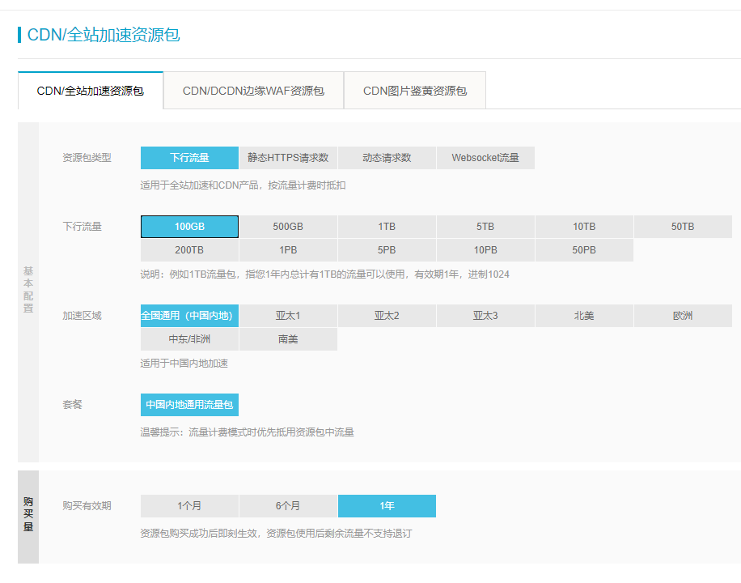

CDN 是什么可以吃吗
许多人的个人主页可能会部署在 GitHub Pages 上，不过由于众所周知的原因，GitHub Pages 的加载速度实在是堪忧，所以为了更好地面向国内的用户，我们可以考虑使用 CDN 进行加速。
什么事 CDN 呀
就像我们访问一些“不存在”的奇怪网站的时候，直接连接是不通的，需要一个代理来进行转发来科学上网一样，CDN 是用来解决资源加载太慢的问题。与科学上网不同，CDN 会在不同国家的节点上缓存自己网站的内容，对于已有的静态资源直接命中，未缓存的资源才会转发回源。而如今我们使用的，大多是全站加速 DCDN，它可以使得动态资源也可以成功加速，这部分资源的加速类似于代理的请求模式。
CDN 的资源包们
CDN 常用的计费方式一般是按量计费（因为按带宽计费太贵了 23333），对于最基本的用户来说，买个 100GB/年的下行流量包就足够了，毕竟我们也不用于分发大型文件嘛。
我们在购买资源包的时候，发现还有其他几种资源包，比如静态 HTTPS 请求数和动态请求数资源包。
HTTPS 请求数是云服务中比较恶心的东西（我感觉在请求过程中，对比不开 HTTPS，就多了证书验证的部分啊，为啥还需要额外收费）。如果我们 cdn 不使用 HTTPS 的话，我们加载出来的网页就会告诉我们部分不安全（部分浏览器会有个黄色的锁），而网页所有资源全都是 HTTPS 协议请求的话，一般是绿色的锁。动态请求常见于链接里那些带着问号，后面跟着参数的 URL，这个在 DCDN 里如果不设置忽略的话，这个就需要 CDN 去访问源网站求请求相关资源，消耗动态请求数。
不过好消息是，由于阿里的按量计费是每个小时进行结算的，他们规定“计费明细存在多小数位；汇总进位为 2 位小数时，产生的 3 位及以上小数的金额抹除”，这样其实就告诉我们，只要每个小时自己的消耗不超过 1 分钱，这个小时的请求费用就是免费的。本文编辑时（2021 年 2 月 16 日），静态 HTTPS 请求数的按量计费是 0.05 元/10000 次，也就是说只要每小时 HTTPS 使用不超过 2000 次就是免费的；动态请求数的按量计费是 0.15 元/10000 次，也就是大约每小时 666 次以内是免费的。
值得注意的是，云服务商的 CDN 通常会要求在国内加速的域名要进行 ICP 备案。
配置一个全站加速
配置全站加速 DCDN 第一步，确保自己的加速域名已经通过了 ICP 备案，否则申请加速是通过不了的。
添加域名

我们在阿里云控制台的全站加速模块中，添加域名，我们需要配置源站的相关信息，源站就是 cdn 没有命中回源（即去哪里找）的网站，不应与加速域名相同（如果源站域名与加速域名相同，则 cdn 在找不到内容后会请求自己资源，而显然 cdn 自己没有这个资源，就会继续请求自己……这样 cdn 一直找不到源资源文件）。
假设我们的加速域名为example.com，想加速example.github.io的 GitHub Pages，而且想即便访问example.github.io也可以重定向到example.com，我们应在 GitHub Pages 中配置 CNAME 为example.com，然后源站类型选择源站域名，填写example.github.io，端口 443（HTTPS）。
在提交之后，我们需要设置回源 HOST、静态文件（目录）、HTTPS 等。
设置回源 HOST
这一步是非常关键的一步，我就栽在这里一次。
回源 HOST 指全站加速节点在回源过程中，在源站访问的站点域名。
还是上面 GitHub Pages 的例子，我们需要设置 HOST 为加速域名，**而不是example.github.io**。如果选择example.github.io，GitHub 会由于我们配置了 CNAME，不给予资源文件，而是让 cdn 跳转到加速域名，导致无限循环。（参考blog）
配置静态文件类型/文件路径
这一步决定哪些文件会让 cdn 进行缓存（没缓存的会回源嘛）。一般我们会配置常见资源类型为图片文档等，我们也可以设置 html,css 等文件的缓存，而文件路径如果为/则表示网站的全部资源文件均需要进行缓存。
文件过期时间有几个默认的时间，我们可以按照自己实际情况酌情修改缓存时长。为了避免反复刷新缓存，变化可能比较快的资源建议缓存时长不要太大。
设置 HTTPS
HTTPS 如果开启必然会造成一笔不小的 HTTPS 请求资源消耗费用，这部分费用甚至会比流量费还要贵一些，但是开启后会比较安全，建议购买资源包后开启。
获取 SSL 证书
对于 HTTPS，我们首先需要有一个加速域名的 SSL 证书。证书获取方式可以通过云服务商（推荐域名管理商或者 CDN 提供商，可以方便添加 TXT 解析或者方便证书的部署）获得的证书（通常为一年），或者 Let’s encrypt 的三个月证书。
可能有人问，为什么 Let’s encrypt 给的证书只有三个月有效期，根据官方的解释，90 天可以减少证书错误分发及密钥泄漏导致的损失，也可以鼓励大家进行自动部署。
获取证书的步骤我应该还会再写一篇博客的吧见“聊聊证书”。
HTTP2、TLS、强制跳转与 HSTS
HTTP2 和新的 TLS 握手协议可以使得用户访问网站更加安全，比较建议打开。
强制跳转可以让以 http 协议访问的用户被自动跳转到 HTTPS 协议上，以防被中间人攻击。
而 HSTS 是告诉用户，未来 x 天内我这个域名只支持 HTTPS 协议。浏览器得知后，再以后的访问中无需跳转，浏览器会自动修改协议为 HTTPS 协议，减少被中间人攻击的可能。此外开启 HSTS 后，浏览器则不允许忽略证书错误，如果证书过期或者被攻击后，用户无法选择“忽略安全问题（不推荐）”来跳过这个错误，以免造成不必要的风险。
当然后两个开启会让 HTTPS 请求数进一步增加（原本是 http 的也 HTTPS 了），但是还是建议大家开启。
其他
- 在缓存配置-HTTP 头中，我们可以自定义 HTTP 头。这个的使用就比如自定义
Access-Control-Allow-Origin。（这是一个跨域允许的 HTTP 头，我们在网站中通过引用或者 ajax 请求资源的时候，如果资源与访问域名不同，则属于跨域行为。如果请求的资源没有这个请求头则默认不允许跨域请求，强行请求会被浏览器拒绝；这个 HTTP 头的值为允许请求的域名，如为*则表示允许任意域名请求。）对于原网站不允许跨域的文件，我们可以自定义允许跨域的 HTTP 头，使得自己的域名允许被跨域访问。 - 访问控制中有一个 URL 鉴权和 Referer 防盗链，前者是需要适当的密钥进行请求资源，才能被 cdn 响应；后者是请求来源必须符合一定规则，但是 referer 只对浏览器请求有效，python 访问甚至可以自定义 referer。这两个综合起来的用途一般是只想在线播放，不希望用户下载的知识产权资源，可以通过后端返回合适的 URL（写在前端就没用了），然后供在线浏览使用。